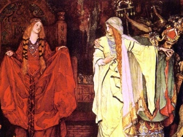

Sacred Texts Legends and Sagas England
Buy this Book at Amazon.com
|

Detail from King Lear: Cordelia's Farewell, by Edwin Austin Abbey [1887-1909] (Public Domain Image) |
Geoffrey of MonmouthHistories of the Kings of Britaintr. by Sebastian Evans[1904] |
Geoffrey of Monmouth's Histories of the Kings of Britain was a medieval attempt to forge a national epic for the British people, shortly after the Norman conquest. Geoffrey invented a mythical back-history for the Britons, starting, as Virgil did, with a fugitive from the sack of Troy, named Brute or Brutus. The Histories includes many traditional tales, particularly a telling of the story of King Lear (who was originally a Celtic God, Lyr). He also inserts actual historical events such as Caesar's invasion of Britain.
Geoffrey of Monmouth is a primary source for the Arthurian legends, one of the first published accounts. His Arthur has few of the romantic, mystical and miraculous motifs of later versions. Notably missing are the Round Table, the Grail, Guinevere's affair with Lancelot, Excalibur, the Lady of the Lake, and the final journey to Avalon. Geoffrey's Arthur is a national hero who unites a huge empire by the sword, and goes toe-to-toe with the Roman Empire. The translator speculates in the Epilogue that Arthur is meant to be an allegorical representation of King Henry I.
Embedded in the Histories is The Prophecies of Merlin, which retroactively predicts current events of Geoffrey's time. Also available at this site is a bilingual edition of a later work which Geoffrey composed on the same theme, Vita Merlini, or Life of Merlin. Also of interest is his description of the theft of Stonehenge from Ireland: uncannily recognizing that the stones had been moved from a long way away. This is the first appearance on the Internet of this translation of Geoffrey's Histories.
--J.B. Hare, February 14th, 2008
Title Page
Contents
Book I
Book II
Book III
Book IV
Book V
Book VI
Book VII
Book VIII
Book IX
Book X
Book XI
Book XII
The Translator's Epilogue